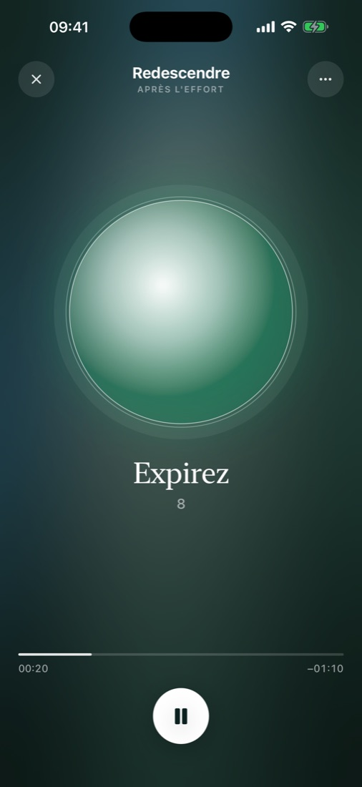

Fin de la sortie
Vous arrêtez
la montre.
Pas le corps.
Le cœur bat encore à 165, le souffle est court, la tête tourne. On soigne l'entraînement, et très peu les minutes qui suivent.
Le chemin du retour
Ralentissez.
Souffle vous attend
un peu plus loin.
Faites défiler doucement. Pas plus vite que votre respiration.
Trois respirations
Le monde
ralentit.
Inspirez par le nez en maintenant le doigt. Relâchez, et laissez l'air sortir un peu plus longtemps qu'il n'est entré.
90 secondes plus tard
Le cœur est
redescendu.
L'expiration plus longue que l'inspiration aide le cœur à ralentir après l'effort. Replere vous guide de la voix, juste après la séance, debout ou assis, montre au poignet ou non.

Replere · iPhone
Après le sport,
respirez.
Tous les sports. De 90 secondes à quelques minutes. Gratuit pendant la bêta.
Rejoindre la bêtaPrototype. Rien n'est enregistré sur cette page.